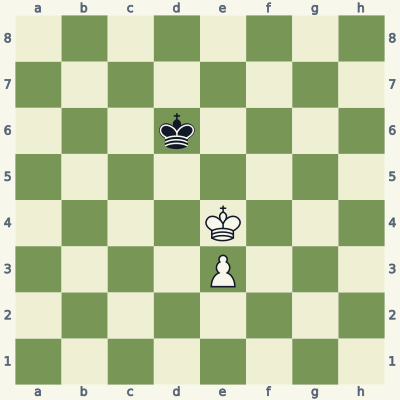
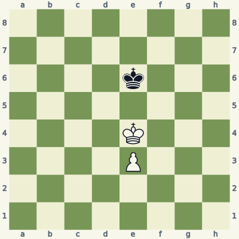
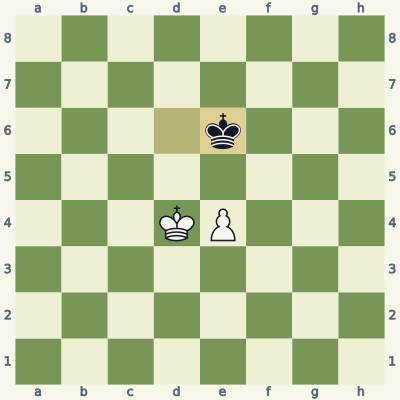
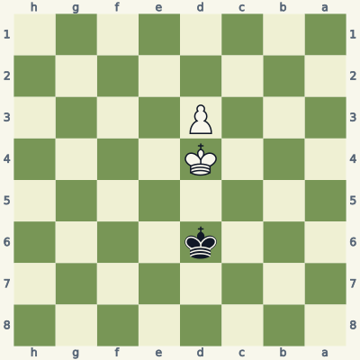
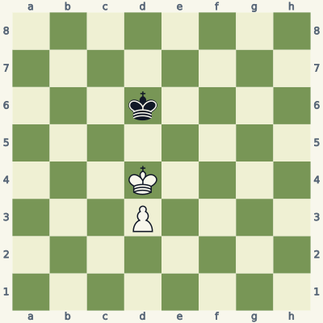
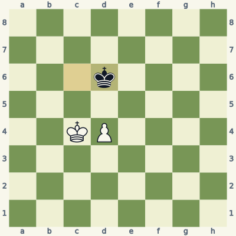
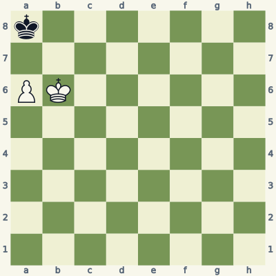
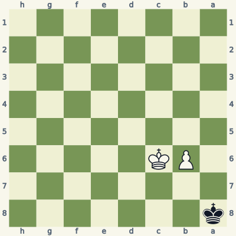
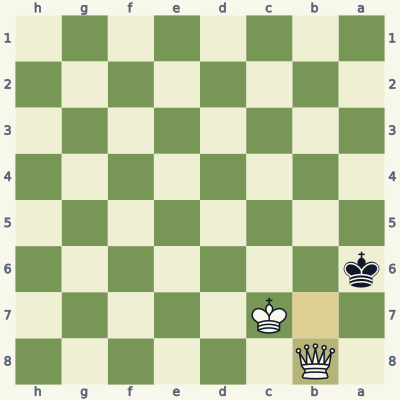

For players who know how the pieces move. Read the model, try the exercise without the answer, then explain the result aloud. Use a board and make the moves one at a time. Spend about 20 minutes per lesson; repeat it tomorrow and a week later.
Check the immediate threat, choose candidates, test the opponent's checks and captures, then inspect the final position. Some questions ask for a safe move or correct diagnosis rather than a unique best move. Sample replies illustrate ideas unless the explanation says they are forced.
Notation and replay help
K king · Q queen · R rook · B bishop · N knight. A pawn move has no piece letter. Nf3 means knight to f3; Rxc6 means rook captures on c6; + means check; # means mate; O-O means kingside castling; e8=Q means promotion. A line beginning 1... starts with Black. Diagrams face the player to move.
The PGN download loads starting positions and sample lines into a chess program. Position codes (FEN) let you recreate individual boards. The PDF and website work without an account.
Lesson 09.1
Reach a key square before pushing
In a king-and-pawn ending, king placement can be more valuable than a pawn tempo. Key squares tell you where the king needs to stand to force promotion against correct defense.

Model A · White to movePosition code8/8/3k4/8/4K3/4P3/8/8 w - - 0 1
Read the position
For this white e3-pawn, the key squares are d5, e5 and f5.
Kf5 reaches a key square because Black's king on d6 does not attack f5.
The pawn is still on e3; pushing it changes the key-square problem.
1. Kf5 Ke7 2. Ke5
Kf5 reaches a winning king position. After the sample ...Ke7, Ke5 keeps the king in front of the pawn and takes the opposition. The exact starting position and this continuation are tablebase wins for White.
Do not immediately play e4 after ...Ke7. That move uses a pawn tempo before the king has secured the next stage; Black can hold the resulting position. The king must continue doing the work instead of assuming that reaching one key square makes every later pawn push safe.
Exercise B · White to move
Take five minutes. Write your reason and the opponent's reply before opening the answer.

Inspect what changed from the model.Position code8/8/4k3/8/4K3/4P3/8/8 w - - 0 1
Which black king move in the setup has changed White's access to f5 and d5?
Can White force a win from this exact position?
Follow Kd4 ...Kd6 e4 ...Ke6. What has Black maintained?
Read the full explanation
Black's king is now on e6. It controls d5, e5 and f5, so White cannot move directly onto any of the e3-pawn's key squares.
No. With White to move this is a tablebase draw against correct defense. White can still try, but a plan must not promise a forced promotion that the position does not contain.
Black stays in front of the pawn and responds to White's king and pawn moves without allowing penetration. The sample line remains drawn at every step. The exercise tests recognition of a defensive resource, not the search for a nonexistent winning move.
1. Kd4 Kd6 2. e4 Ke6

Position after the sample line; the last move is highlighted.
Score your explanation: 1 point for the fact and 1 for its consequence in each answer, out of 6. At 4 or below, replay the model and revisit tomorrow.
Where the idea can fail
For an ordinary pawn on its second, third or fourth rank, the three key squares are two ranks ahead on its file and adjacent files. Rook pawns are a special case, and advanced pawns use different key squares. Do not apply this limited rule everywhere.
Use it in your own games
Play both starting positions against a tablebase. Before each pawn push, stop and predict whether the result stays a win or draw; then check the answer.
Opposition is a way to control access, not a magic label. With kings facing each other one square apart, the player forced to move may have to yield a route around the other king.

Model A · Black to movePosition code8/8/3k4/8/3K4/3P4/8/8 b - - 0 1
Read the position
The kings stand on d4 and d6, separated by d5.
It is Black to move in Model A.
White's d3-pawn is still behind its king, leaving the king room to advance.
1... Kc6 2. Ke5 Kd7 3. Kd5
Black must yield ground. After ...Kc6, Ke5 reaches a key square for the d3-pawn. Following ...Kd7, Kd5 keeps the king in front and preserves the win.
Do not replace Kd5 with an automatic d4 push. In that exact position, d4 gives up the win and allows a draw. Opposition helps the king gain access; you still have to choose moves that keep the access useful as the pawn advances.
Exercise B · White to move
Take five minutes. Write your reason and the opponent's reply before opening the answer.

Inspect what changed from the model.Position code8/8/3k4/8/3K4/3P4/8/8 w - - 0 1
What is the only change from Model A?
State the correct result with best play.
After Kc4, how does ...Kc6 help Black, and what is the sample continuation?
Read the full explanation
The pieces occupy exactly the same squares, but White moves first. The side-to-move label is part of the position, not a minor caption.
This version is a draw. In Model A, Black to move loses; here White must move away from the favorable king opposition and cannot force penetration.
...Kc6 keeps Black in front of White's king. After d4, ...Kd6 holds the blockading relationship. The listed line stays drawn. Learn the route and the move order instead of memorizing a picture without its turn.
1. Kc4 Kc6 2. d4 Kd6

Position after the sample line; the last move is highlighted.
Score your explanation: 1 point for the fact and 1 for its consequence in each answer, out of 6. At 4 or below, replay the model and revisit tomorrow.
Where the idea can fail
A pawn move can alter who must move the king next. Count available pawn tempi and the actual key squares; having "the opposition" is not a substitute for calculating the resulting position.
Use it in your own games
Set up the same diagram twice and alternate who moves first. Predict the result before checking a tablebase, then explain the route the attacker gains or loses.
A rook pawn often draws when the defending king reaches the promotion corner. There is no second side for the attacking king to work around, and stalemate limits attempts to force the defender out.

Model A · White to movePosition codek7/8/PK6/8/8/8/8/8 w - - 0 1
Read the position
White's a6-pawn promotes on a8, occupied by Black's king.
White's king on b6 cannot force Black out of that corner.
If White plays a7, Black is not checked and has no legal move.
1. Kc7 Ka7 2. Kc6 Ka8
Kc7 ...Ka7 Kc6 ...Ka8 shows the defender retaining the corner without losing. The exact starting position is a tablebase draw, not a failed search for a hidden winning move.
The tempting a7 is immediate stalemate: a7 is occupied by the pawn and defended by the king, b7 is controlled by White's king, and b8 is controlled by the pawn. Black is not in check on a8. Waiting moves do not create an extra file around the board's edge.
Exercise B · Black to move
Take five minutes. Write your reason and the opponent's reply before opening the answer.

Inspect what changed from the model.Position codek7/8/1PK5/8/8/8/8/8 b - - 0 1
It is Black to move here. What is Black's only legal move?
Give White's winning route through promotion after that move.
If White moved first in this same diagram instead, would Kc7 win?
Read the full explanation
Black must play ...Kb8. The pawn on b6 attacks a7, and White's king controls b7. Unlike the rook-pawn case, this forced exit allows White to promote with correct play.
After ...Kb8, b7 ...Ka7 Kc7 ...Ka6 b8=Q promotes. Black can choose other replies after the pawn push, but all lose with correct play. The tablebase confirms that this starting position with Black to move is lost for Black.
No. With White to move, Kc7 would be stalemate: the b6-pawn attacks a7, and the king on c7 controls b7 and b8. In fact the White-to-move version is drawn with best defense. Pawn file and side to move both matter.
1... Kb8 2. b7 Ka7 3. Kc7 Ka6 4. b8=Q

Position after the sample line; the last move is highlighted.
Score your explanation: 1 point for the fact and 1 for its consequence in each answer, out of 6. At 4 or below, replay the model and revisit tomorrow.
Where the idea can fail
A non-rook pawn offers different geometry, but stalemate still matters. Do not assume that every king move in a winning position preserves the win.
Use it in your own games
Replace a rook pawn with a b-pawn while preserving a legal position. Before every move, list the defending king's legal squares and whether the pawn gives check.
All six starts and listed moves in this book were checked for legality. Stockfish 19 reviewed candidates at depth 18. Available endings with seven or fewer pieces were checked against the Lichess tablebase, including every move of the demonstrated endgame lines. A strategic sample is not a claim of unique best play.
These original, AI-assisted explanations were written around the positions and revised after checking. The lesson data and validation notes make the examples inspectable. Further reading and practice: